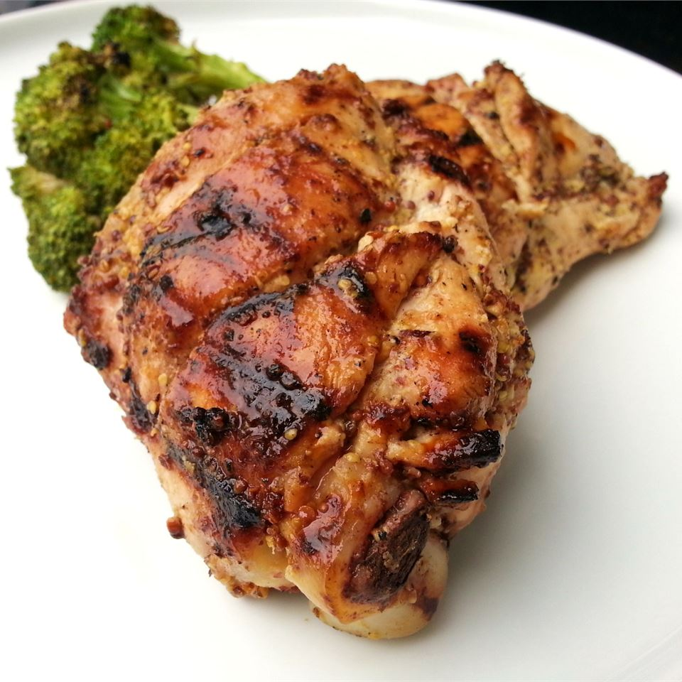

Honey Mustard Chicken Thighs
Credit for this recipe goes to Chef John Mitzewich

First of all, I cannot take credit for this recipe, allthough it is my girlfriend's favorite chicken dish that I make for her.
I've mentioned credit to Chef John already,
but in case you're interested, here
is the link to his original recipe.
There's not much to say about the flavor combination of sweet and spicy that hasn't been said already. That being said, this is far and away
one of the staple chicken dishes in my house. Chicken thighs are nearly impossble to overcook,
the mustard, cayenne, and honey create a flavor pallette that is hard to beat, and the onions that
the chicken is cooked on top of turn caramelized, sweet, and savory from being cooked in chicken fat.
So, without further ado, let's jump into the recipe.
Ingredients
- 8 large, bone-in chicken thighs (skin-on, bone-in is not optional)
- 1/2 cup Dijon mustard
- 1/4 cup honey or 1/4 cup packed brown sugar (original recipe calls for brown sugar, I find that honey works better)
- 1/4 cup red wine vinegar, or any vinegar light in color (basically, anything except balsamic. The dark color will make the final product look unappetizing)
- 1 teaspoon dry mustard powder
- 1 teaspoon salt
- 1 teaspoon freshly ground black pepper
- 1/2 teaspoon ground, dried chipotle pepper (not optional)
- 1 pinch cayenne (or to taste, I like my chicken to make me sweat a little, so I usually put 1-2 teaspoons in)
- 4 cloves garlic, minced (this isn't one of those "I like lots of garlic, so I'm going to add lots of garlic" recipes, I promise this is enough)
- 1 very large Vidalia onion, cut into half-inch (1cm) thick rings
- 2 tablespoons neutral oil (canola, peanut, etc.) or spray-able, neutral cooking oil (highly recommended)
Directions
- Make 2 slashes crosswise into the skin and meat of each chicken thigh with a sharp knife,
cutting to the bone. Cuts should be about 1 inch apart. Transfer thighs into a heavy resealable plastic bag.
- Whisk Dijon mustard, honey, red wine vinegar, mustard powder, salt, black pepper,
ground chipotle pepper, and cayenne pepper in a bowl until smooth. Whisk garlic into marinade.
- Pour marinade into bag over chicken thighs and massage marinade into chicken, coating
each thigh thoroughly and working the marinade into the cuts.
Seal bag and refrigerate at least 4 hours (or overnight for best flavor).
- Move a rack to the center position in oven. Preheat oven to 450 degrees F (230 degrees C).
Line a baking sheet with aluminum foil and lightly oil the foil. The foil is very important unless you want to spend an eternity cleaning that baking sheet.